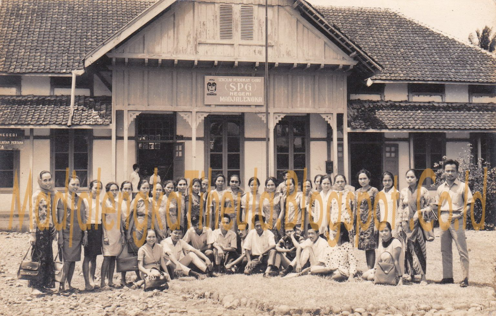

SMA Negeri 2 Majalengka merupakan salah satu sekolah menengah atas yang berada di Majalengka, Jawa Barat, Indonesia. Sekolah ini berlokasi di Jalan Ahmad Yani nomor 02, Majalengka. Sama dengan SMA pada umumnya di Indonesia masa pendidikan sekolah di SMAN 2 Majalengka ditempuh dalam waktu tiga tahun pelajaran, mulai dari Kelas X sampai Kelas XII.
SMAN 2 Majalengka berada di lingkungan perkotaan dan dekat dengan kantor pemerintah kabupaten dibangun pada tahun 1901.
Tempo dulu gedung ini adalah gedung tinggi dan megah yang merupakan sekolah milik Belanda yang diberi nama HIS (Hollandsch-Inlandsche School) kalau sekarang setingkat Sekolah Dasar.
Para siswanya khusus orang-orang tertentu, yaitu putra para pejabat dan atau turunan ningrat. Pada tahun 1950 berubah menjadi SR (Sekolah Rakyat) dan tahun 1959 SR diganti menjadi SGB
(Sekolah Guru B) kemudian dikembangkan menjadi SGA (Sekolah Guru A) sampai tahun 1965. tahun 1966 sampai dengan tahun 1991 disempurnakan menjadi SPGN (Sekolah Pendidikan Guru Negeri).
Mulai 15 Juli 1991 sekolah kejuruan ini mengalami alih fungsi menjadi sekolah umum dan diberi nama SMAN Ahmad Yani. Pada tahun 1992 diganti menjadi SMAN 2 Majalengka selanjutnya tahun 1994 diganti menjadi SMUN 2 Majalengka.
Sesuai dengan sistem Pendidikan Nasional UU nomor 20 Tahun 2003 SMUN 2 Majalengka diganti menjadi SMAN 2 Majalengka.
Visi
″Terwujudnya Sekolah prima yang inovatif
dan kreatif berbasis IMTAQ dan IPTEK serta bercirikan keunggulan lokal tahun 2013″
Misi
{kind=link}